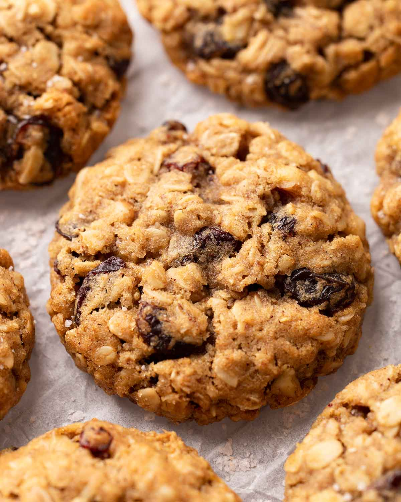

The best cookie in the world is the oatmeal raisin cookie. It has a good blend of unique textures and flavors and is (probably not) healty at the same time!
While oatmeal raisin remains the best cookie, there are others that are still worth eating. Most cookies are worth eating.
| Cookie Name | Rating | Recipe |
|---|---|---|
| Oatmeal Raisin | 5 | Sally's Baking |
| Macaroon | 4 | Once Upon a Chef |
| Cream Cheese Cookie | 4 | Preppy Kitchen |
| Chocolate Chip | 3 | Joy Food Sunshine |